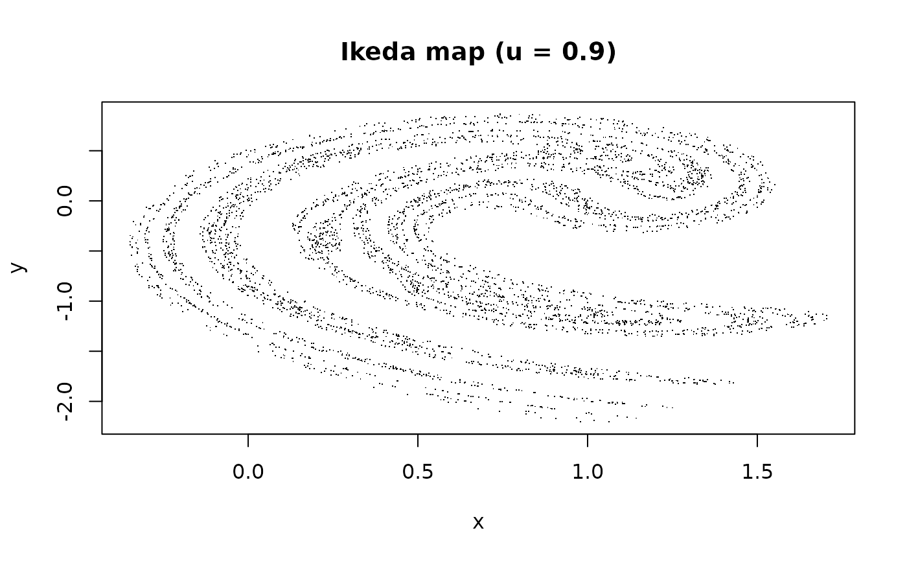

Iterates the two-dimensional Ikeda map, which models the light field in a nonlinear ring cavity: $$t_n = 0.4 - 6 / (1 + x_n^2 + y_n^2),$$ $$x_{n+1} = 1 + u (x_n \cos t_n - y_n \sin t_n),$$ $$y_{n+1} = u (x_n \sin t_n + y_n \cos t_n).$$
With the standard parameter `u = 0.9` the trajectory traces a strange attractor with a teardrop-shaped support.
Arguments
- n
Integer. Number of iterations to generate.
- u
Numeric. Dissipation parameter, typically in (0, 1). Defaults to 0.9 (chaotic regime).
- x0
Numeric. Initial x. Defaults to 0.
- y0
Numeric. Initial y. Defaults to 0.
- noise_sd
Numeric (\(\ge 0\)). Standard deviation of additive Gaussian noise applied to each component after each iteration. Defaults to 0 (deterministic).
References
Ikeda, K. (1979). Multiple-valued stationary state and its instability of the transmitted light by a ring cavity system. *Optics Communications*, 30(2), 257-261. doi:10.1016/0030-4018(79)90090-7
See also
[simulate_henon_map()], [simulate_lorenz()].
Other simulation functions:
simulate_duffing(),
simulate_logistic_map(),
simulate_lorenz(),
simulate_mackey_glass(),
simulate_rossler(),
simulate_standard_map()
Examples
orbit <- simulate_ikeda_map(5000, u = 0.9)
plot(orbit$x, orbit$y, pch = ".",
xlab = "x", ylab = "y",
main = "Ikeda map (u = 0.9)")
